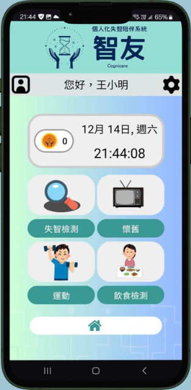
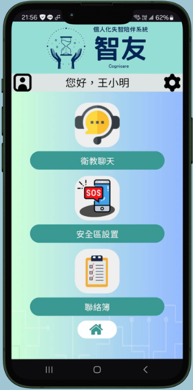
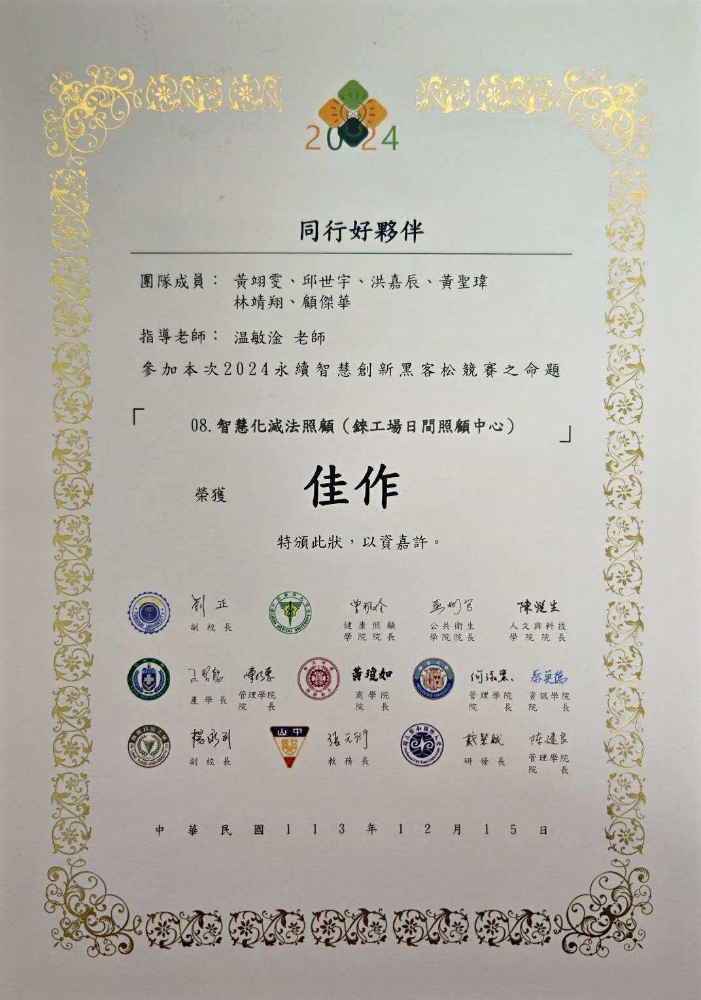
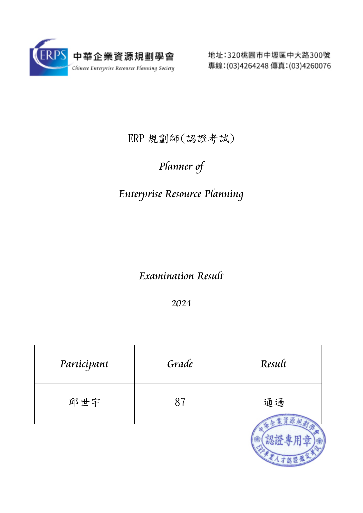

你好，我是邱世宇 讓想法點石成金
這裡收藏著我做過的專題、課程作品與實作成果，專注於 AI 應用、產品設計與系統開發，從真實需求出發，將想法轉化為實際可用的工具與服務。
全國 AI 創意實作競賽 第一名


AI失智照護系統
專注於個人化陪伴的失智照護 AI 系統。
Projects
專案
兩個專案都以真實情境為出發點，從需求、功能到成果都可以快速看到核心價值。
Works
課程作品
AI 協作開發
3D Printing Tool
3D 條碼載具卡產生器
3D Printing Tool
3D 條碼載具卡產生器
將條碼文字轉成可 3D 列印的實體載具卡。支援 Code 39 與 Code 128，可調整卡片尺寸、底板厚度及條碼凸起高度，匯出 STL、分件 3MF 與 SVG，方便單色或多色列印。
已發布至 MakerWorld 3D 列印社群，讓使用者從線上產生條碼卡，到下載模型並實際列印。
Awards
競賽獲獎

2024 · 第一名
全國 AI 創意實作競賽
查看專案
2023 · 第一名
InnoServe 無人機應用組
查看專案

2024 · 佳作
永續智慧創新黑客松競賽
查看專案Certificates
證書
ERP 規劃師認證

AutoCAD 專業認證
Contact